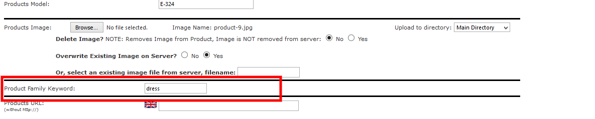
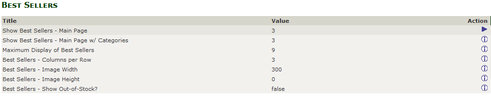

Responsive Zencart Theme
Extra Configuration
This section covers all other theme configuration which were not covered in earlier sections. At this point of Documentation we expect user to have succesfully installed the Zen cart, YOURStore theme and would have gained enough knowledge about the Template Settings.
So this section will not cover any of this part, for Template Settings go to previous page or click on appropriate section of your choice on the left menu.
Home Page Variations
As of now YOURStore comes with 12 premade homepage layouts which can be seen on our live demo
When you install the theme all our sample data as shown in the live demo gets installed on your server/localhost too. We have made the configuration of theme very easy with the Advanced theme panel, though if you desire to get the replica of our homepage demos follow the steps metioned below.
Before continuing we expect that you have read the Template Settings Overview thouroughly and are very well aware of setting up those values, so this section will not cover any of those part.
Steps below covers only 5 Homepages, other Homepage variations can be done using theme multiple theme options.
Home Page Version 1
- Login to your store admin panel first. Then go to Tools > Template Settings.
- In the header section, set the value of header style as Header style 1
- In the footer section, set the value of footer style as Footer style 1, under social links set the value of Display Instagram Feed as Yes.
- In the Top Banners section set the value of Display Top Banner Status as Yes and Display Style as Display Style 1.
- In the General section under Brands Slider, Info Boxes and Testimonials Section set the value of Display Brands Slider as Yes, Display Style as Display Style 1, Display Info Boxes as No, Display Style for Testimonials as Display Style 1
- In the Middle Banners section set the value of Display Middle Banner as No
- In the Bottom Banners Section set the value of Display Bottom Banners as Yes and the Bottom Banners layout as Display Style 1
- In the Index page section under Category Products Section set the value of Display Category Products Section as Yes and Display Style as Display Style 1. Under Products Display Style section set the value of New Products as Grid View, Special Products as Slider View, Featured Products as Slider View, Best Sellers Products as Slider view, Featured and Special Products Slider View Style as Split View.
- Now go to Configuration > Index Listing and set the values of News Products, Featured Products and Special Products on Main Page as 1, 2, 3 respectively.
- Now go to Configuration > Best Sellers and set the value of Show Best Sellers - Main Page as per your requirement.
- Go to Configuration > News Box Manager and set the value of Items to Show in Home Page as per your requirement. Similarly under Configuration > Testimonials Manager set the value of Define Testimonial Status as 1.
- Once the above changes are done the homepage will look something like the demo here : YOURStore Version 1
Home Page Version 3
- Login to your store admin panel first. Then go to Tools > Template Settings.
- In the header section, set the value of header style as Header style 3
- In the footer section, set the value of footer style as Footer style 3, under social links set the value of Display Instagram Feed as No.
- In the Main Slider section set the value of Display Main Slideshow as Yes and the Display Style as Intro, please note that you need to remove the captions for this slideshow and home page versions.
- In the Top Banners section set the value of Display Top Banner Status as No.
- In the Index page section set Display Category Products Section as No.
- In the General section under Brands Slider, Info Boxes and Testimonials Section set the value of Display Brands Slider as No, Display Info Boxes as No.
- In the Middle Banners section set the value of Display Middle Banner as No
- In the Bottom Banners Section set the value of Display Bottom Banners as No.
- Now go to Configuration > Index Listing and set the values of News Products, Featured Products and Special Products on Main Page as 0.
- Now go to Configuration > Layout Settings and set the value of Categories - Always Show on Main Page as 0.
- Now go to Configuration > Best Sellers and set the value of Show Best Sellers - Main Page as 0.
- Go to Configuration > News Box Manager and set the value of Items to Show in Home Page as 0. Similarly under Configuration > Testimonials Manager set the value of Define Testimonial Status as 0.
- Once the above changes are done the homepage will look something like the demo here : YOURStore Version 3
Home Page Version 4
- Login to your store admin panel first. Then go to Tools > Template Settings.
- In the header section, set the value of header style as Header style 4
- In the footer section, set the value of footer style as Footer style 4, under social links set the value of Display Instagram Feed as No.
- In the Main Slider section set the value of Display Main Slideshow as Yes and the Display Style as Full width.
- In the Top Banners section set the value of Display Top Banner Status as Yes and the Display Style as Display Style 3.
- In the Index page section set Display Category Products Section as No.
- In the General section under Brands Slider, Info Boxes and Testimonials Section set the value of Display Brands Slider as Yes and Display Style 1, Display Info Boxes as Yes and Display Style as 2.
- In the Middle Banners section set the value of Display Middle Banner as Yes
- In the Bottom Banners Section set the value of Display Bottom Banners as Yes and Display Style as Display Style 1.
- Now go to Configuration > Index Listing and set the values of News Products, Featured Products and Special Products on Main Page as per your requirement.
- Now go to Configuration > Layout Settings and set the value of Categories - Always Show on Main Page as 0.
- Now go to Configuration > Best Sellers and set the value of Show Best Sellers - Main Page as per your requirement.
- Go to Configuration > News Box Manager and set the value of Items to Show in Home Page as 0. Similarly under Configuration > Testimonials Manager set the value of Define Testimonial Status as 0.
- Once the above changes are done the homepage will look something like the demo here : YOURStore Version 4
Home Page Version 5
- Login to your store admin panel first. Then go to Tools > Template Settings.
- In the header section, set the value of header style as Header style 5
- In the footer section, set the value of footer style as Footer style 5, under social links set the value of Display Instagram Feed as No.
- In the Main Slider section set the value of Display Main Slideshow as Yes and the Display Style as Full width.
- In the Top Banners section set the value of Display Top Banner Status as No.
- In the Index page section set Display Category Products Section as Yes and set the value of Display Style as Display Style 2.
- In the General section under Brands Slider, Info Boxes and Testimonials Section set the value of Display Brands Slider as Yes and Display Style 2, Display Info Boxes as No, Testimonials Display Style 2
- In the Middle Banners section set the value of Display Middle Banner as No
- In the Bottom Banners Section set the value of Display Bottom Banners as Yes and Display Style as Display Style 2.
- Now go to Configuration > Index Listing and set the values of News Products, Featured Products and Special Products on Main Page as 0.
- Now go to Configuration > Layout Settings and set the value of Categories - Always Show on Main Page as 0.
- Now go to Configuration > Best Sellers and set the value of Show Best Sellers - Main Page as 0.
- Go to Configuration > News Box Manager and set the value of Items to Show in Home Page as 0. Similarly under Configuration > Testimonials Manager set the value of Define Testimonial Status as 1.
- Once the above changes are done the homepage will look something like the demo here : YOURStore Version 5
Home Page Version 12
- Login to your store admin panel first. Then go to Tools > Template Settings.
- In the header section, set the value of header style as Header style 2
- In the footer section, set the value of footer style as Footer style 2, under social links set the value of Display Instagram Feed as No.
- In the Main Slider section set the value of Display Main Slideshow as No.
- In the Top Banners section set the value of Display Top Banner Status as Yes and Display Style as Display Style 2. On how to configure the Banners style 2 look for Top Banners configuration under Template Settings Overview.
- In the Index page section under Category Products Section set the value of, Main Categories Style on Index Page as Custom View with Icons, Display Category Products Section as No. Under Products Display Style section set the value of New Products as Slider View, Special Products as Slider View, Featured Products as Slider View, Best Sellers Products as Slider view, Featured and Special Products Slider View Style as Split View.
- In the General section under Brands Slider, Info Boxes and Testimonials Section set the value of Display Brands Slider as No, Display Info Boxes as Yes, Display Style for Info Boxes as Display Style 1.
- In the Middle Banners section set the value of Display Middle Banner as No
- In the Bottom Banners Section set the value of Display Bottom Banners as No.
- Now go to Configuration > Index Listing and set the values of News Products, Featured Products and Special Products on Main Page as 1, 2, 3 respectively.
- Now go to Configuration > Layout Settings and set the value of Categories - Always Show on Main Page as 1.
- Now go to Configuration > Best Sellers and set the value of Show Best Sellers - Main Page as per your requirement.
- Go to Configuration > News Box Manager and set the value of Items to Show in Home Page as 0. Similarly under Configuration > Testimonials Manager set the value of Define Testimonial Status as 0.
- Once the above changes are done the homepage will look something like the demo here : YOURStore Version 12
There are just the five demos we have explained, all demos were created using the Zencart default admin options and the YOURStore Theme Admin Panel, advanced ever created for any Zencart theme available in the market. You can create your homepage variation using these options. All other HomePage demos can be seen our YOURStore live demo page
Disable Language/Currency Dropdown
Language and Currency Dropdowns are shown in the top bar of theme. You can disable them if you do not require in your store. Follow the below steps to do so :
Login to your store Admin Panel and go to Configuration > Layout Settings.
At the bottom of page you will find option Show Languages in Header? for languages and Show Currencies in Header? for currencies. Both the values are set to "True" by default, change the value to "False" to remove it from Top Bar/Header.
Disqus Comments
YOURStore comes integrated with the Disqus comments section on the product detail page and on the News detail page.
By default it comes by our login site shortname, which you need to change to your disqus account. For that go to Admin > Configuration > Disqus Comments.
In this section you will see the option to enable or disable the disqus comments section. Also there is an option of Site Shortname where you need to add the shortname of your Disqus account. You need to signup for Disqus if you don't have an account.
News Box Manager
YOURStore comes with the News Box Manager plugin preinstalled. The configuration settings can be found under Admin > Configuration > News Box Manager. You can set the Items to show on Home page and for Sidebox too. The News content lenght can also be changed using these options.
If you are willing to add new News for your store, go to Admin > Localization > News Box Manager where all your current news will be displayed. You can also insert/add latest news story for your store using this option.
Related Products
Related Products is a 3rd Party Zen cart plugin used in the theme. It can be used to display the products related to each other on the product info page.
Two or more products can be related using a Keyword, the keyword can be anything that defines or joins those products to each other.
To add a keyword to the product, login to store admin, go to Catalog > Categories/Products. Go to the Products detail section.
Find the "Product Family Keyword" textbox below the "Product Image". In the text box given add your choice of Keyword that you think can define the product. Similarly enter the same keyword for any other product.

This way the products having same key words will be displayed on the product info page under "Related Products" section.
Best Seller Products
Best Seller products are displayed on the Home page in Products Tab.
To disable the Best Seller Products from HomePage go to Admin > Configuration > Best Seller and set the value of Show Best Sellers - Main Page to "0".
You also increase the number of Best Seller products to display on Homepage, which is by default set to "9".
Best Seller products image height/width can be set using from this section.

Footer Columns
Columns in Footer of YOURStore theme like "Informations", "My Account", "Customer Care" etc can be edited using the Store Admin Panel
Information Column
To edit the links in this column go to Store Admin > Tools > Define Pages Editor.
Select define_footer_information_links.php file to edit. Here you can add/delete/edit the links as per your requirement for Informations column.
My Account Column
To edit the links in this column go to Store Admin > Tools > Define Pages Editor.
Select define_footer_account_links.php file to edit. Here you can add/delete/edit the links as per your requirement for My Account column.
Customer Care Column
The links displayed in this column are the Ez-Pages whose status in the Footer is enabled and are sorted according to the sort order.
Code for this column can be found in define_footer_customer_care_links.php file under Store Admin > Tools > Define Pages Editor.
Get In touch Column
This column displays the Contact details like Address, Contact number etc, which can be found in define_footer_getin_touch_links.php file under Store Admin > Tools > Define Pages Editor.
Custom Shipping And Delivery & Payment Methods column
This are the custom columns displayed in Footer Style 5, which can be found in define_footer_v2.php file under Store Admin > Tools > Define Pages Editor. You can add your custom text as per your requirement.
FaceBoook Like Box
This like box is displayed in Footer Style 5, which can be found in define_footer_v2.php file under Store Admin > Tools > Define Pages Editor. Search for the Facebook content section in the file.
To add your own facebook like box plugin go to this facebook plugin page. Add and customize the plugin as per your requirement and click on "Get Code button". Copy the code from Step 3, as the code from Step 2 has already been included in the theme. Paste the code in the above mention file under the facebook code section.